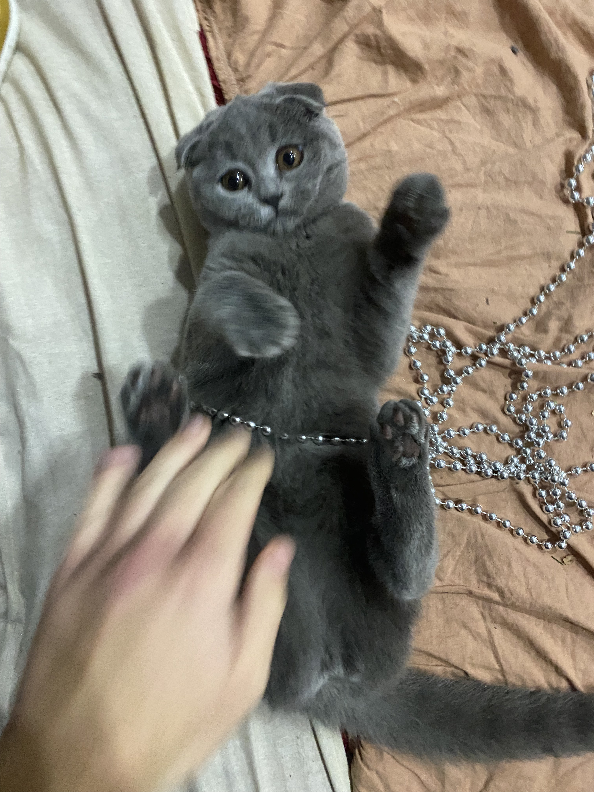
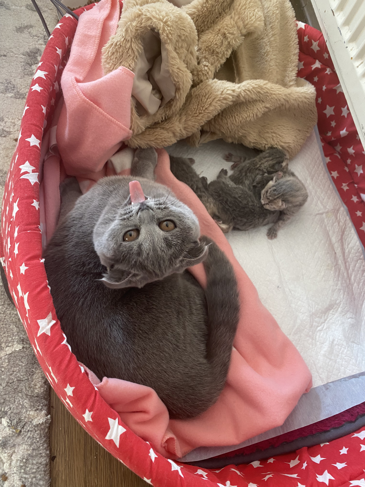
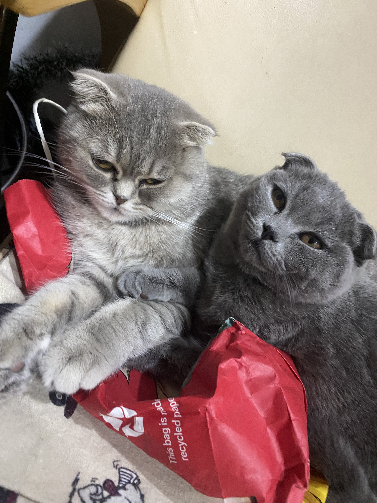
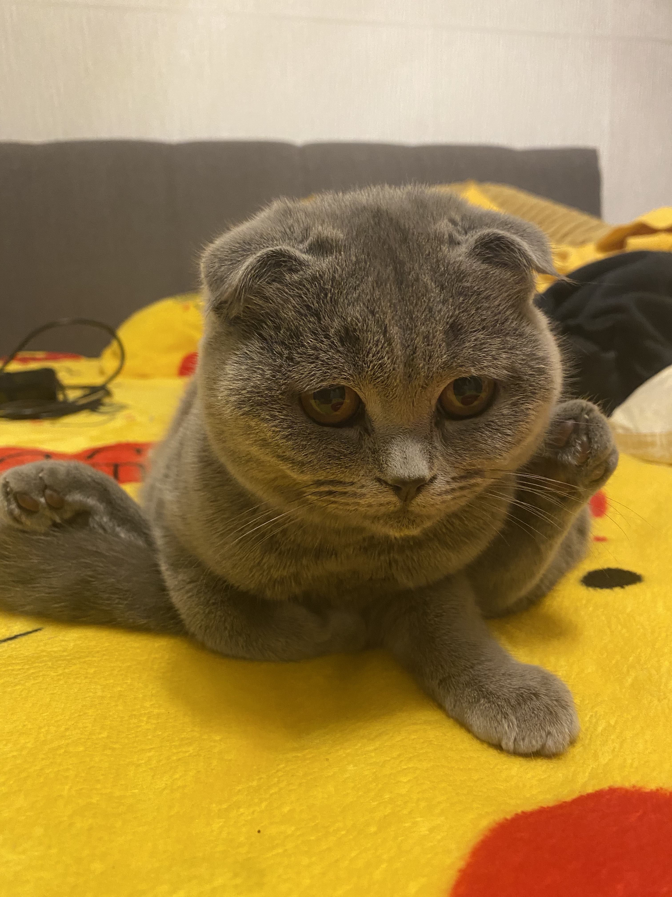

Povestea Sarei

Exploratoarea Curioasă 🌍
Sara este sora mai mare a grupului și își ia rolul în serios! Este, de departe, cea mai curioasă dintre toate pisicile noastre. Dacă se aude un zgomot nou sau apare un obiect nou în casă, Sara va fi prima care investighează.
Personalitate
Este incredibil de jucăușă și are o energie care pare nesfârșită. Adoră să vâneze puncte de laser și să se lupte cu jucării cu pene. Fiind mai mare, are și o atitudine protectoare față de ceilalți, deși o arată mai mult prin joacă și ghionturi.
Nu este la fel de lipicioasă ca alții, dar când vrea afecțiune, vine și se freacă de picioarele tale torcând zgomotos, cerând să fie mângâiată pe cap.
Obiceiuri Amuzante
- Îi place să se cațere în cel mai înalt punct din cameră și să supravegheze totul de sus.
- Deschide sertare și uși de dulap dacă nu sunt bine închise.
- "Vorbește" mult, mai ales dimineața când îi este foame.
Mai multe poze cu Sara



